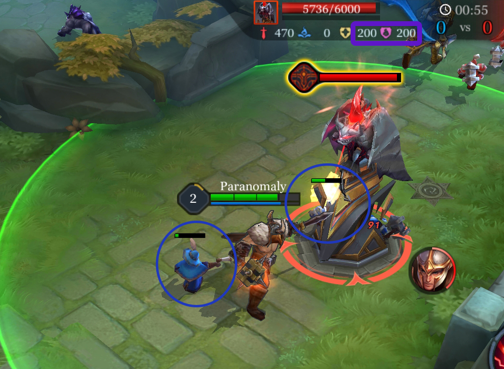

Tower
Towers are the large structures throughout the map that protect the lanes and attack enemies who approach. There are three towers in each lane on either side of the river, and one in each base known as the Core. The towers are classified in tiers, ranging from one to three. Tier 1 towers being the furthest away from the base, while tier 3 towers, also called high ground towers, are those at the very edge of a team’s base. The main objective of a match is to destroy all of the towers in at least one lane before destroying the enemy’s core. The match ends when the Core is destroyed, so protecting it should be your first priority.
Towers will target the nearest enemy minion or hero. They prioritize minions, attacking the hero after there are no more minions in range.
However, a tower will target a hero whenever they damage an opponent, even when enemy minions are nearby.
In order to prevent tanky or high damage heroes from easily knocking down towers while absorbing its fire, towers get a large amount of damage resistance (changed from increased armor and magic defense) whenever minions aren’t nearby. This goes up immediately after the last minion is killed without regard to if a hero is still attacking the tower.
